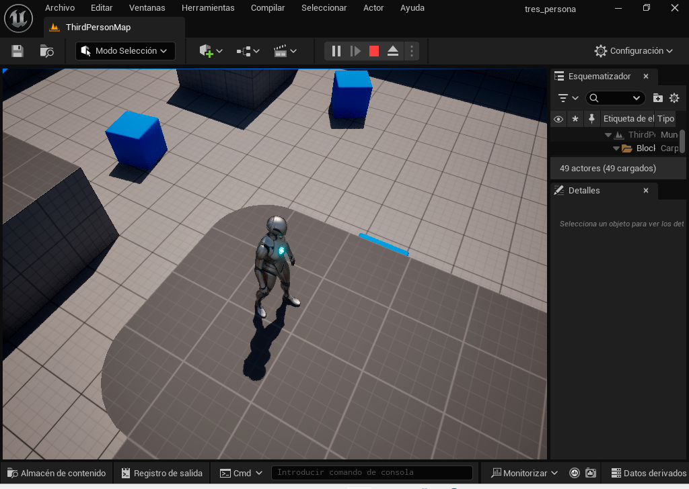

Esta guía muestra cómo utilizar árboles de comportamiento para configurar un personaje de IA que patrullará o perseguirá a un jugador.

En la Guía de inicio rápido del Árbol de comportamiento , aprenderás a crear una IA enemiga que reacciona al ver al jugador y comienza a perseguirlo. Al perder de vista al jugador, tras unos segundos (que puedes ajustar según tus preferencias), la IA dejará de perseguirlo y se moverá aleatoriamente por el entorno hasta volver a verlo, como se muestra en el siguiente video de ejemplo.
Aqui va el video final
Al final de esta guía, comprenderá los siguientes sistemas: Scripting visual de Blueprint Controladores de IA Pizarras Árboles de comportamiento Servicios de árboles de comportamiento Decoradores de árboles de comportamiento Tareas del árbol de comportamiento
En este primer paso, configuramos nuestro proyecto con los recursos que necesitaremos para que nuestro personaje de IA se desplace por el entorno.
Abra el cajón de contenido , luego haga clic derecho en la carpeta ThirdPerson y cree una nueva carpeta llamada AI .